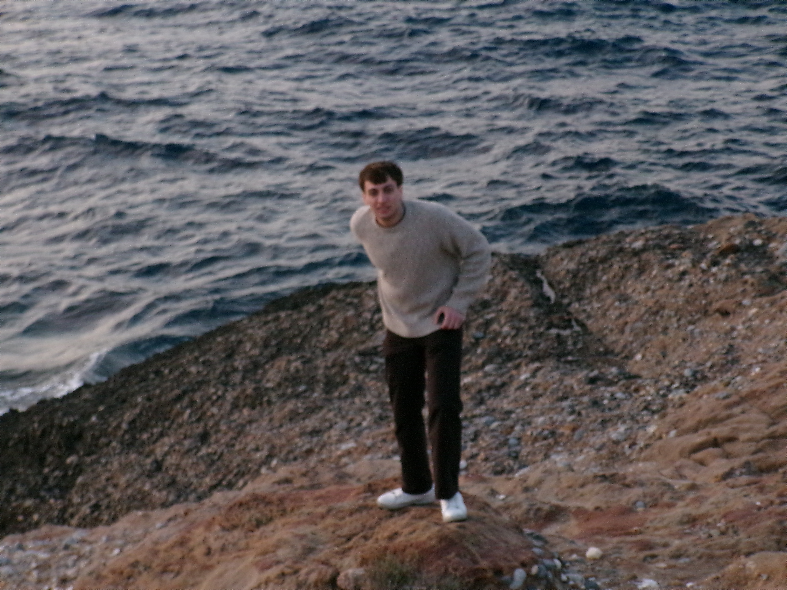
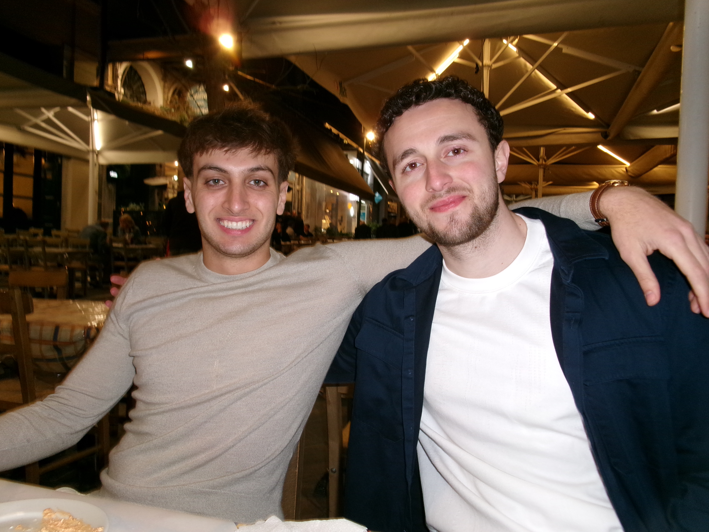
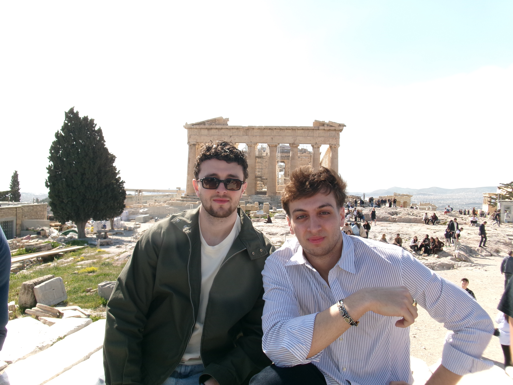

I'm a senior at Loyola University Chicago, studying Finance with a minor in Applied AI. Last semester I studied abroad in London and got to visit 13 new cities. My favorite was Greece, where all of these photos were taken! Back in Chicago, I spend my free time going on late-night drives and finding new places to eat around this great city.


